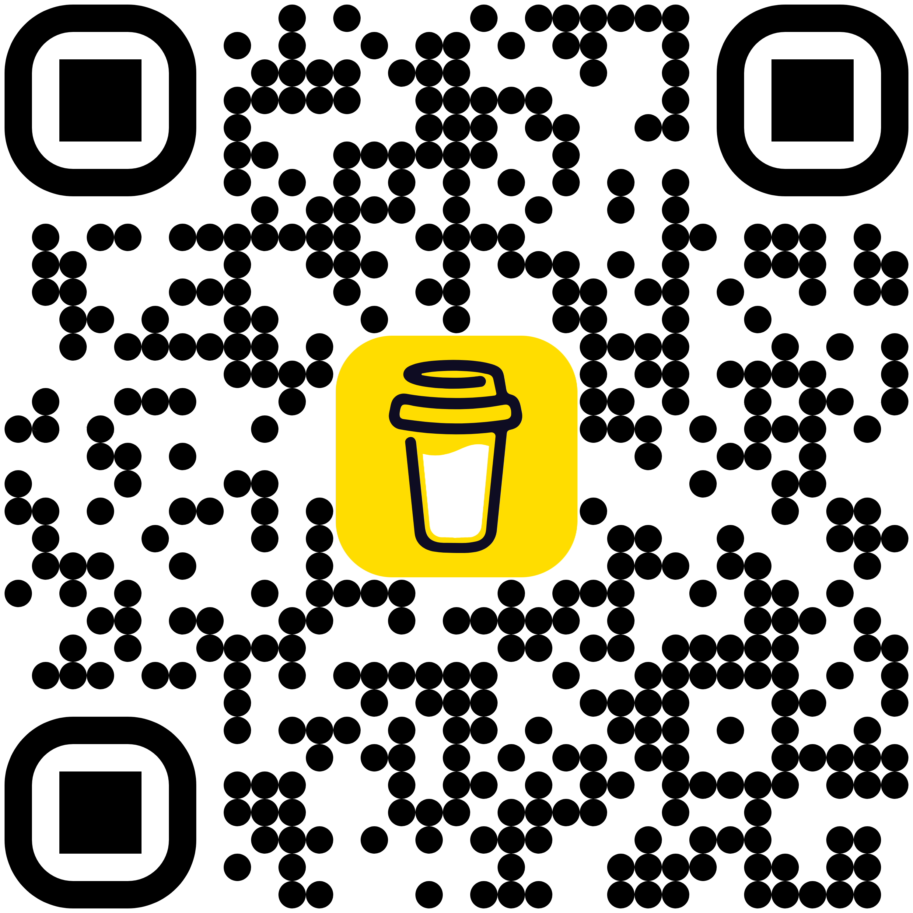

if your browser is your reasearch workstation, you'll love
huddle
create, manage, and search through your tab groups.
quick actions
- group all (window) - group all tabs in the current window into a new group.
- group by site - automatically organise ungrouped tabs by website.
- remove duplicates - close duplicate tabs instantly.
- suspend inactive - save memory by suspending inactive tabs.
select & manage tabs
- use checkboxes to select individual tabs or entire windows.
- search by title, url, or page content to filter tabs.
ctrl+clickon a tab title to switch to that tab.- add selected tabs to new or existing groups.
- suspend, ungroup, or close selected tabs.
content search
- search text across open tabs.
- filter by specific tab groups.
- click on a search result to navigate to that tab.
keyboard shortcuts
ctrl+shift+g(windows/linux) - quickly group all tabs in the current window.
ctrl+clickon any tab title in the popup to open/switch to that tab.
tab groups display
- grouped tabs show their group name and color as a badge.
- suspended tabs are marked with a "suspended" badge.
- the 'active tab groups' section shows all current groups with tab counts.
tips & best practices
- use domain grouping for research sessions with multiple sites.
- periodically remove duplicates to keep tabs organised.
- suspend tabs you're not actively using to save memory.
- use content search to look for pages by content (perhaps, to group them).

like my work?
please scan the qr code or click the button to show support ;)